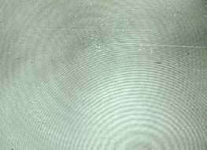

Image on the Film of a Hologram
|  | The image on the film for a transmission hologram is formed by the interference of the light from the object and the reference beam. This interference pattern looks something like the ripples on a pond when a bunch of small pebbles is thrown in. The interference pattern on this hologram is extraordinarily well defined. |
| Viewing a transmission hologram involves illuminating it with a coherent source like a laser and looking through the film at the image in space behind the film. The image shown is associated with the interference pattern above. |  |
Holography concepts
| HyperPhysics***** Quantum Physics *****Light and Vision | R Nave |